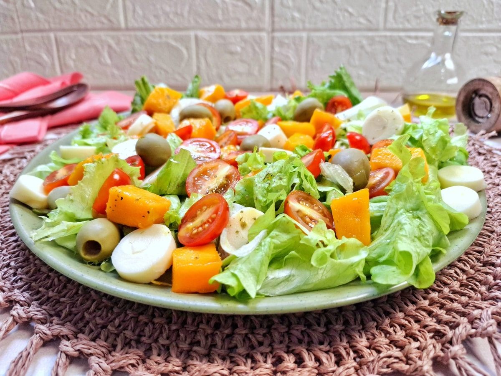

Salada Tropical
Ingredientes
- 1 alface americana picada
- 1 manga madura em cubos
- 1 xícara de abacaxi em cubos
- 1 pepino em rodelas
- Tomates cereja a gosto
- 1/2 xícara de uvas-passas
- Azeite
- Suco de 1 limão
- 1 colher de sopa de mel
- Sal a gosto
Modo de Preparo
- Coloque a alface picada em uma tigela grande.
- Adicione a manga, o abacaxi, o pepino e os tomates cereja.
- Misture suavemente todos os ingredientes.
- Prepare o molho misturando azeite, limão, mel e sal.
- Regue a salada com o molho preparado.
- Finalize adicionando as uvas-passas por cima.
- Mantenha na geladeira até o momento de servir para ficar mais refrescante.